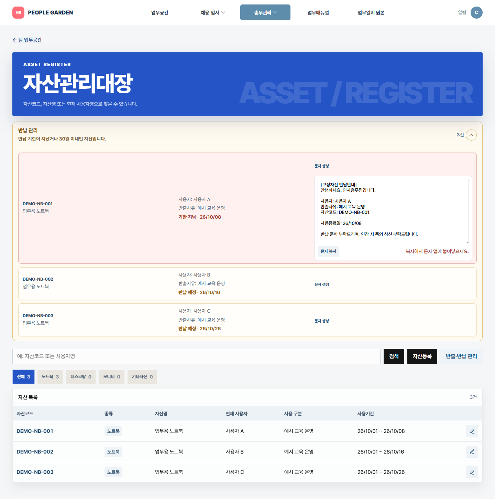
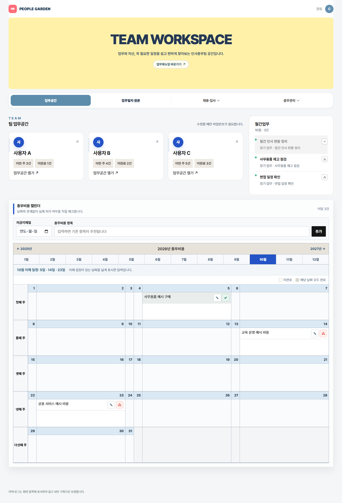
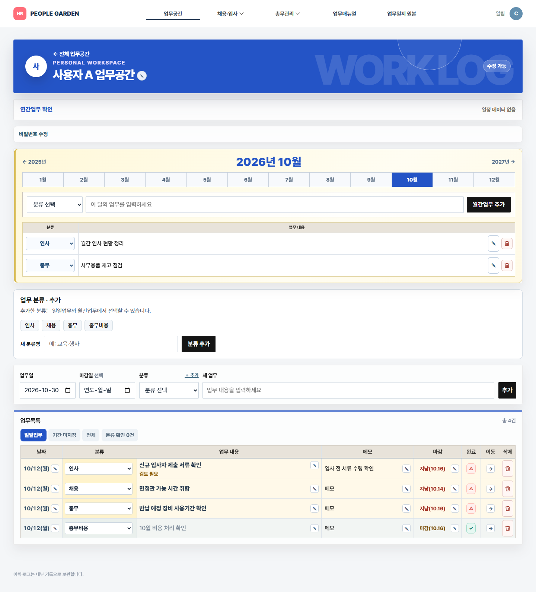
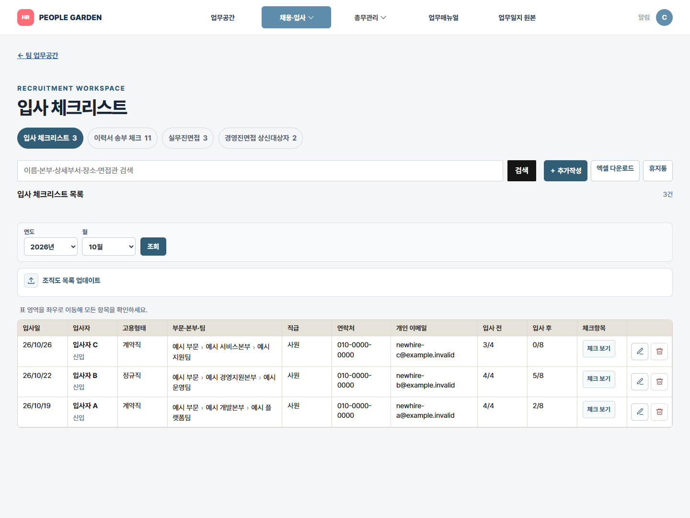
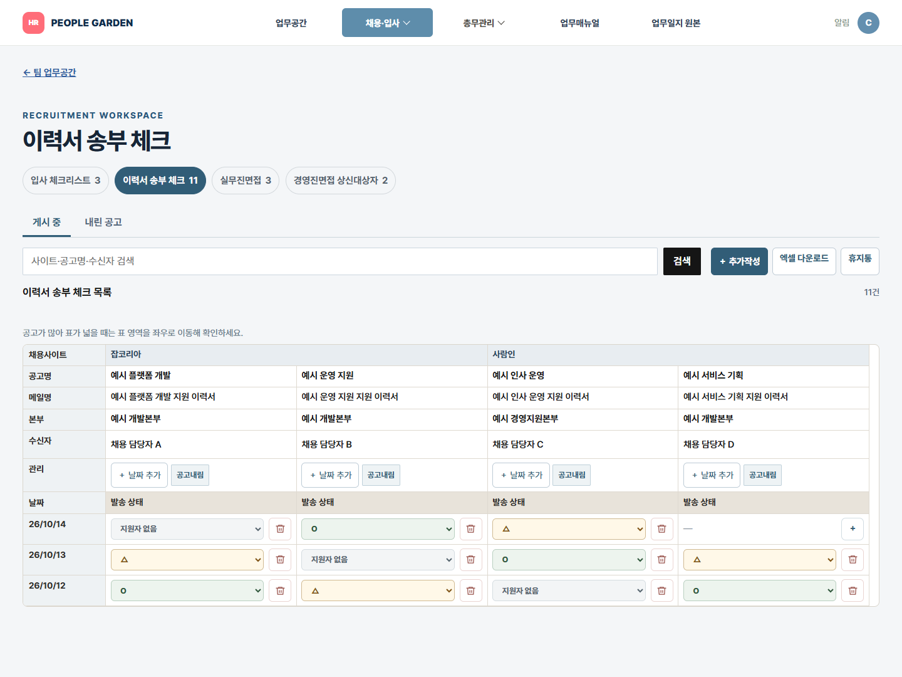
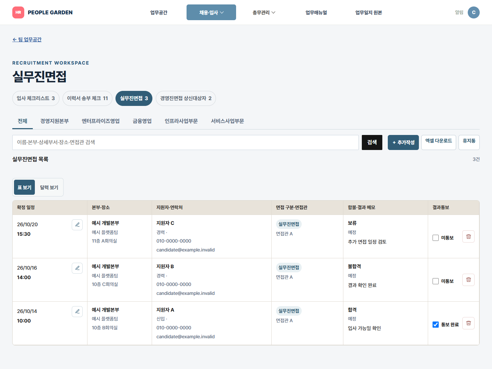
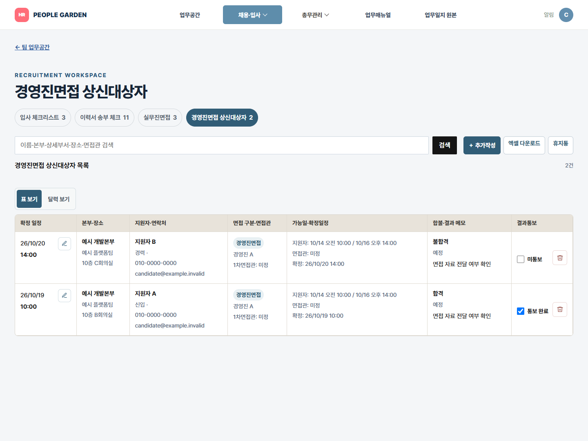
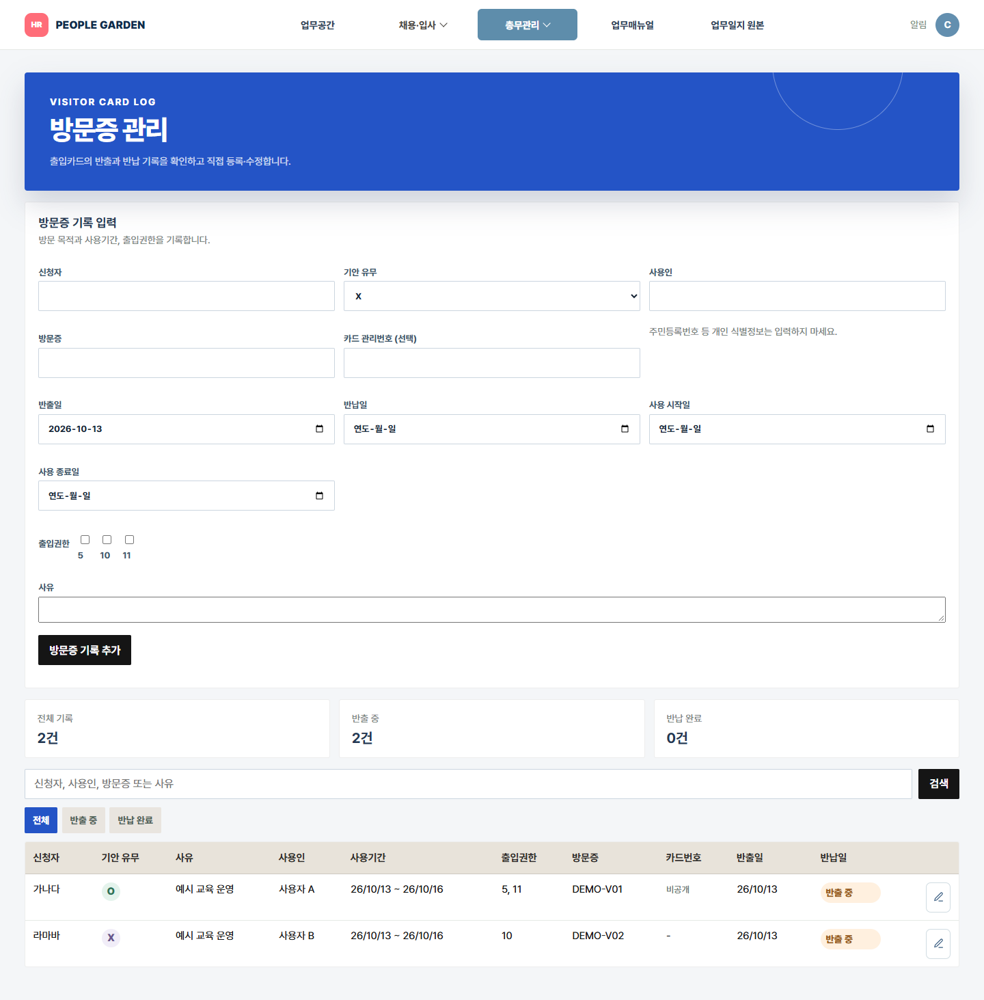
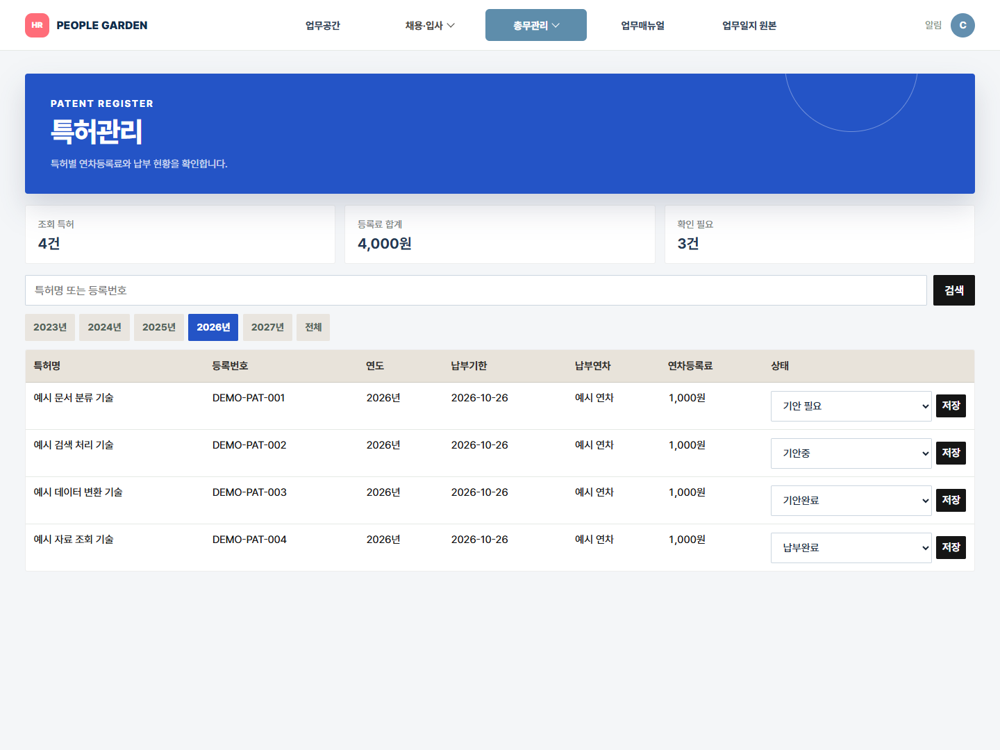
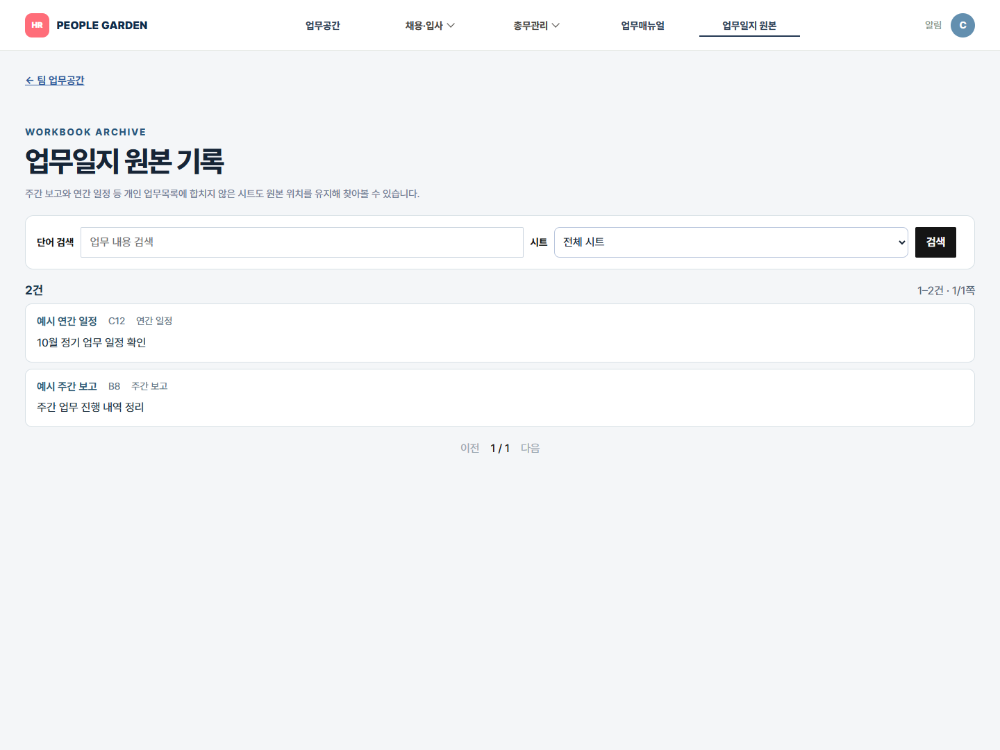

- 사용 대상
- 인사·총무 담당자
- 구현 방식
- 업무 기준을 정리한 뒤 AI 코딩 도구로 구현
- 현재 단계
- 가상 데이터로 주요 기능을 확인한 프로토타입
업무 확인
일지와 메모를 나눠 보던 방식에서, 내용과 마감일·처리 상태를 함께 확인하도록.
채용·입사
개별 진행 기록을 송부 상태, 면접 결과, 입사 준비 항목으로 구분해 관리하도록.
자산 반납
사용정보를 찾아 안내문을 쓰던 방식에서, 대상 확인 후 안내문을 준비하도록.

업무일지, 채용 현황, 자산대장이 여러 Excel 파일에 나뉘어 있었습니다. 기록을 찾고 다음 할 일을 확인할 때마다 자료를 오가야 했습니다.
일지와 메모를 나눠 보던 방식에서, 내용과 마감일·처리 상태를 함께 확인하도록.
개별 진행 기록을 송부 상태, 면접 결과, 입사 준비 항목으로 구분해 관리하도록.
사용정보를 찾아 안내문을 쓰던 방식에서, 대상 확인 후 안내문을 준비하도록.
팀의 월간 일정과 개인의 일일 업무를
나눠 확인할 수 있게 구성했습니다.
월간 업무와 비용 이체 일정을 한곳에.

업무 내용, 분류, 마감일, 메모, 완료 상태를 함께 관리합니다. 필요한 분류를 추가하고, 분류가 비어 있는 업무를 모아 보완할 수 있습니다.

채용·입사부터 총무관리까지.
기존 자료의 항목을 업무별 화면으로 옮겼습니다.
연도·월로 입사자를 좁혀보고 개인 이메일과 고용형태, 부문·본부·팀을 확인합니다. 조직도 파일은 미리보기 후 선택목록에 반영합니다.

채용사이트별 공고 정보를 묶고, 날짜마다 O·△·지원자 없음으로 기록합니다. 공고별 전달 기록을 보관해 후속 업무를 이어갑니다.

면접 정보에 본부와 세부 조직, 회의실 위치를 표시하고 결과는 합격·불합격·보류로 관리합니다.

지원자별 면접 시간과 장소, 본부, 결과 통보 여부를 확인하고 후속 메모를 남깁니다.

지급일과 비용 항목을 달력에 모아 월별 처리 현황을 관리합니다.
반납 기한이 임박했거나 지난 자산을 모아 확인하고, 사용자·자산코드·반납일이 담긴 안내문을 준비합니다.
방문 목적과 사용기간, 출입 권한, 기안 여부와 반출·반납 내역을 함께 확인합니다.

납부기한과 비용을 확인하고 기안 필요·기안중·기안완료·납부완료 상태를 선택합니다.

원본 자료의 시트 이름과 위치를 유지해 업무 기록을 찾아볼 수 있습니다.

업무를 등록한 뒤 새로고침해도 기록이 남는지, 완료 처리가 반영되는지 실제 앱에서 확인했습니다.
입력 항목과 분류, 마감일과 완료 기준을 정했습니다. 코드 작성에는 AI 도구를 활용했고, 입력 방식과 결과가 업무에 맞는지 직접 확인했습니다.
공개 화면과 영상은 모두 가상 데이터입니다. 개인정보와 사내 자료는 포함하지 않았습니다.
업무 등록·저장·재조회, 완료 상태 변경, 분류 추가 등 주요 기능을 가상 데이터로 확인했습니다.